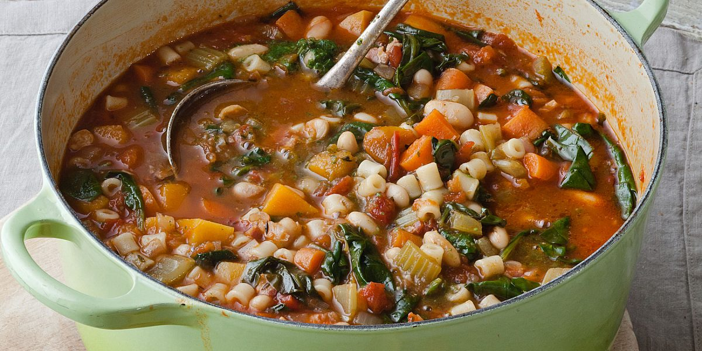

Winter Minestrone Recipe

Description
This Winter Minestrone from Barefoot Contessa is a hearty, comforting soup filled with fresh vegetables, tender cannellini beans, and savory pancetta. It's simple to prepare and perfect for a cozy family dinner or a nourishing lunch.
Ingredients
- Good olive oil
- 4 ounces pancetta, ½-inch diced
- 1½ cups chopped yellow onions
- 2 cups (½-inch) diced carrots (3 carrots)
- 2 cups (½-inch) diced celery (3 stalks)
- 2½ cups (½-inch) diced peeled butternut squash
- 1½ tablespoons minced garlic (4 cloves)
- 2 teaspoons chopped fresh thyme leaves
- 26 ounces canned or boxed chopped tomatoes, such as Pomi
- 6 to 8 cups chicken stock, preferably homemade
- 1 bay leaf
- Kosher salt and freshly ground black pepper
- 1 (15-ounce) can cannellini beans, drained and rinsed
- 2 cups cooked small pasta, such as tubetti
- 8 to 10 ounces fresh baby spinach leaves
- 1/2 cup good dry white wine
- 2 tablespoons store-bought pesto
- Freshly grated Parmesan cheese, for serving
Steps
- Heat 2 tablespoons of olive oil over medium heat in a large, heavy pot or Dutch oven. Add the pancetta and cook over medium-low heat for 6 to 8 minutes, stirring occasionally, until lightly browned.
- Add the onions, carrots, celery, squash, garlic, and thyme and cook over medium heat, stirring occasionally, for 8 to 10 minutes, until the vegetables begin to soften.
- Add the tomatoes, 6 cups of the chicken stock, the bay leaf, 1 tablespoon salt, and 1-1/2 teaspoons pepper to the pot. Bring to a boil, then lower the heat and simmer uncovered for 30 minutes, until the vegetables are tender.
- Discard the bay leaf. Add the beans and cooked pasta and heat through. If the soup is too thick, add more chicken stock as needed.
- Just before serving, reheat the soup, add the spinach, and toss with 2 large spoons. Cook just until the leaves are wilted. Stir in the white wine and pesto.
- Depending on the saltiness of the chicken stock, add another teaspoon or two of salt to taste.
- Serve large shallow bowls of soup with a bruschetta on top. Sprinkle with Parmesan cheese, drizzle with olive oil, and serve hot.